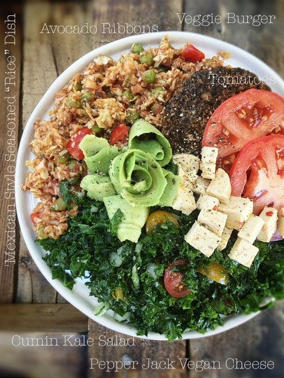

Hardy Veggie Burger Delight

Today’s plate is a bit of a mish-mash of dishes. But it ALL tasted wonderful together. To me, it felt like an “All American” dinner plate.
At a quick glance; burger patty, rice, green salad, cheese, and fresh tomatoes. Now to break it down to the nitty-gritty… of course, you know that everything plated is raw, vegan, and gluten-free.
…is loaded with selenium, an antioxidant mineral, as well as copper, niacin, potassium and phosphorous. Vitamins A, B, K and E, folic acid, calcium, magnesium. I could keep going but let’s stop there so we can just soak that in.
… are a simple, pure whole food that is cut into ribbons with (this) peeler. You will need to use an avocado that ripe but not mushy. They are loaded with heart-healthy monounsaturated fatty acids, fiber. Avocados contain more soluble fiber than most foods and help stabilize blood sugar levels, facilitate proper bowel regularity.
… is rich in vitamins K, A and C. Combine the ingredients in this salad improves immunity, detoxification, treat skin disorders, insomnia, and respiratory disorders. The cumin alone contains thymol, which stimulates the glands that secrete acids, bile, and enzymes responsible for complete digestion of the food in stomach and intestines.
… This cheese contains agar, which isn’t a raw product, but it does come packed with some nutrients. Agar is a good source of calcium, iron, and is very high in fiber. It contains no sugar, no fat and no carbohydrates. It is known for its ability to aid in digestion and weight loss. Never underestimate a single ingredient! Combine it with just the cashews alone, and we have the bonus of… vitamins, minerals, and antioxidants. These include vitamins E, K, and B6, along with minerals like copper, phosphorus, zinc, magnesium, iron, and selenium, all of which are important for maintaining good bodily function.
… cabbage is the new “rice.” It is rich in sulfur, which helps to fight infections in wounds and reduces the frequency and severity of ulcers. It is also a rich source of beta-carotene. Why do we want to get excited about that? Because it helps prevent macular degeneration and promote good eye health and delay cataract formation. This side dish will also bring significant amounts of vitamin B6, folate, and thiamin to the plate.
All these foods combined makes one pretty darn delicious and nutritious plate… don’t just take my word for it.
© AmieSue.com